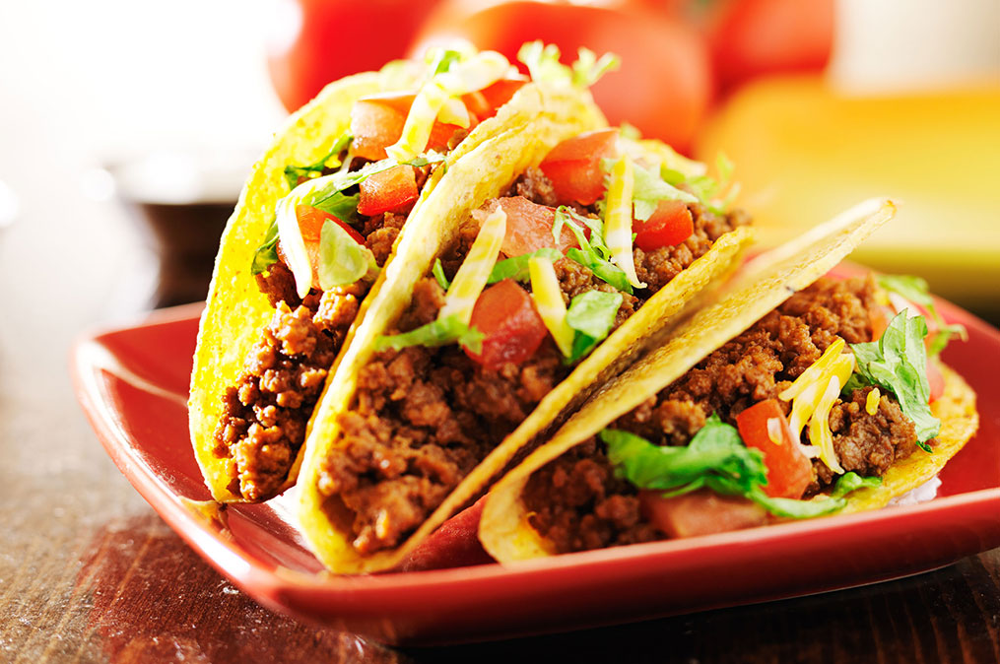

Tacos
Beef Tacos
Beef tacos are a staple dish in many American homes. Their simplicity coupled with their fast cook time and delicious flavor is sure to
please even the pickiest of eaters (except for my son).
We will be making our beef tacos with good 80/20 ground beef because fat is where it's at. Also, do waste time making your own seasoning
as Ole Elpaso has done a pretty bang up job already.
Ingredients
- Ground Beef 1lb
- Taco Seasoning Pack
- Salt and Pepper to taste
- Chili Powder 1tsp (I like to add a little Extra)
- Corn Tortillas
- Your Favorite Taco Extras
Steps
- In a medium skillet, brown meat until it is cooked through and has gained a slightly brown color. None of this gray meat nonsense.
- Once the meat is done, follow the instructions on the packet of taco seasoning, adding the salt, pepper, and chili powder.
- Stick the tortillas in the microwave for 15 seconds to warm them up (double points for warming them in a skillet).
- Plate your tacos the way you like and eat! (Note: this can be done on any day of the week, not just Tuesday).